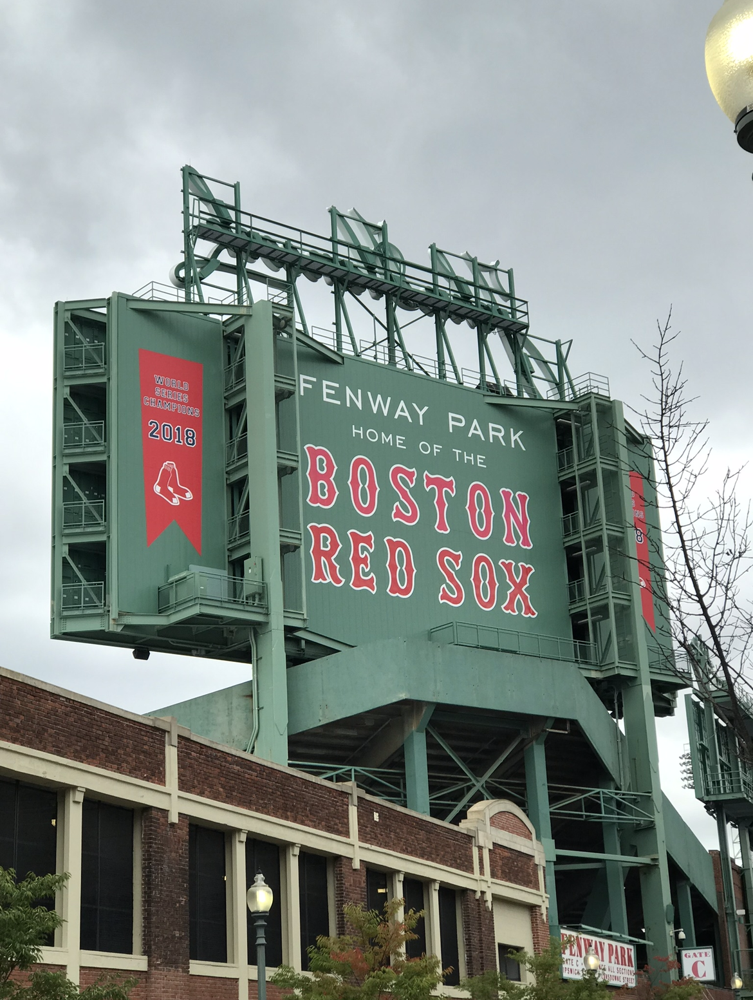

第２回
看板１

場所はLINE CUBE SHIBUYA 10/08
木材で作られた案内板みたいなもの。私がアルバイトでよく行くライブ会場は紙にプリントアウトしたものが貼ってある。
そのため、この木材で作られた案内板が珍しいなと感じる。
看板２

場所は一蘭横浜西口店のトイレの貼り紙 10/10
この貼り紙は緊急時のお知らせであり避難関係かと思ったが読んでみるとトイレットペーパーの話であった。
思わず読んだ時に少し笑ってしまった。
看板３

場所はアメリカのボストン 2019/10/03
ここはBOSTON RED SOXの本拠地であり私が海外留学した時に撮影したもの。
別名でファンウェイ・パークと呼ばれている。
デザイン演習Ⅰ・Ⅱトップページ
XBPトップページ